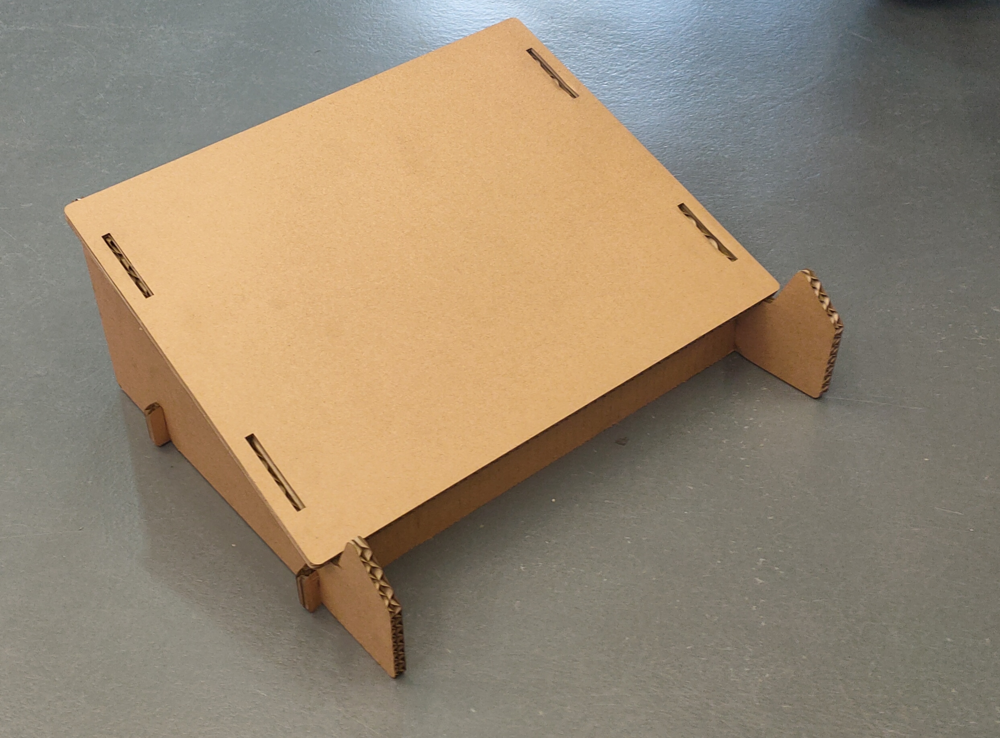

Week 8: Laser Cutting Box
For this week, we will be laser cutting a box. First, we will have to create the box in Fusion 360.
When we are doing the measurements, we can put all of them in the parameters and simply refer back using the name we put the measurements under.
Here is the final product with and without the lid.


A problem with the box is that the lid and the holes of the joints is too small. A better way to create the lid would be to make the walls except for one shorter than the other. Then, we create the joint for the lid to be attached to as seen below.

Laptop Stand
Let's try another laser cutting project. We will be doing a laptop stand.
